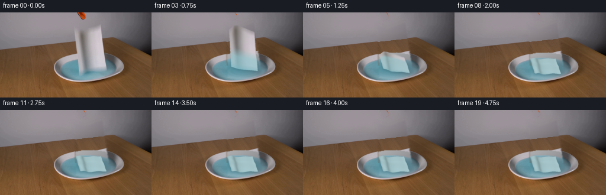
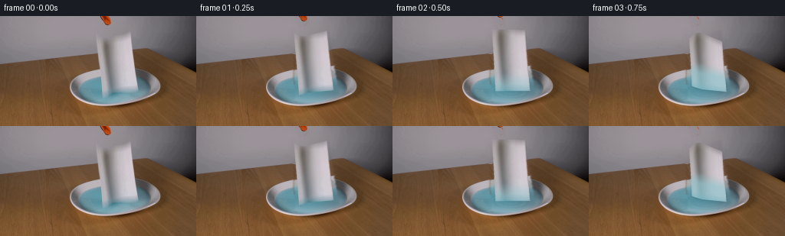
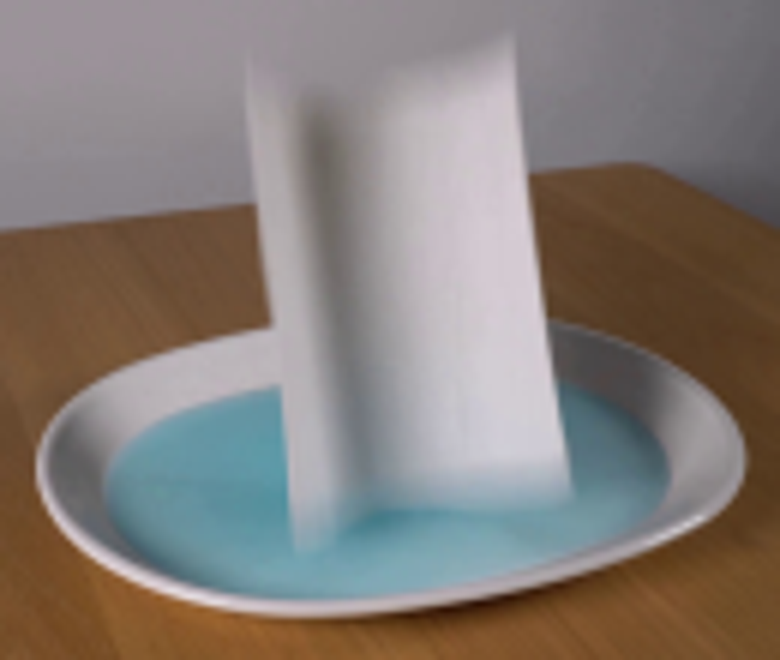
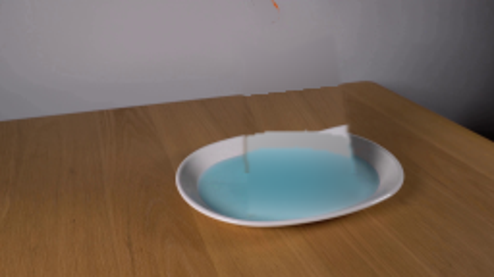

CODING AGENTS AS PIXEL WORLD MODELS
traex/GPT-6.1-Sol · 0127
点击播放 · 原生 RGB 像素
此结果可播放，但该运行尚未通过最终提交审核。页面展示不代表评测通过。
逐轮保存的候选
回放视频、检查图与代码变化。
每份候选均可单独播放。实际图片检查记录在下方工具轨迹中。
候选 01播放与检查图
点击播放 · 原生 RGB 像素


展开代码变化
--- 上一保存版本
+++ 本次保存版本
@@ -0,0 +1,220 @@
+from pathlib import Path
+import numpy as np
+from PIL import Image, ImageDraw, ImageFilter
+import cv2
+from scipy.ndimage import gaussian_filter, map_coordinates
+import artifact_io
+
+ROOT=Path(__file__).resolve().parent
+W,H=256,144
+S=3
+rng=np.random.default_rng(24)
+original=np.asarray(Image.open(ROOT/'first_frame.png').convert('RGB')).astype(np.float32)
+yy,xx=np.mgrid[:H,:W].astype(float)
+
+def polygon(points):
+ a=Image.new('L',(W,H));ImageDraw.Draw(a).polygon(points,fill=255)
+ return np.asarray(a).astype(float)/255
+
+# Recover only the surfaces that become visible as the towel drops.
+paper_mask=polygon([(124,20),(136,25),(141,28),(172,17),(184,101),(169,108),(129,111)])
+paper_mask=gaussian_filter(paper_mask,1.1)
+wall=(yy<63.5-.112*xx)
+known=wall&(paper_mask<.01)&~((xx>128)&(xx<150)&(yy<17))
+features=np.stack([np.ones_like(xx),xx/256,yy/144,(xx/256)**2,(yy/144)**2,(xx/256)*(yy/144)],-1)
+coef=np.linalg.lstsq(features[known], original[known],rcond=None)[0]
+wall_image=features@coef
+wall_image+=gaussian_filter(rng.normal(0,.25,(H,W)),.6)[...,None]
+# Wood remains sampled from the original wood surface, with its fine grain.
+wood=original.copy()
+for y in range(42,90):
+ for x in range(122,187):
+ source_x=x-51
+ source_y=y+int(.11*51)
+ wood[y,x]=original[source_y,source_x]*np.array([.995,1.005,1.014])
+background=original.copy()
+repair=paper_mask
+outside=wall_image*wall[...,None]+wood*(~wall)[...,None]
+background=background*(1-repair[...,None])+outside*repair[...,None]
+# The dish rim and liquid behind the suspended paper.
+outer=polygon([(92,92),(95,84),(103,78),(118,72),(137,68),(158,67),(177,70),(192,75),(203,82),(209,90),(208,98),(202,104),(190,109),(173,114),(154,117),(136,118),(117,115),(103,110),(95,103)])
+liquid=polygon([(103,94),(106,87),(117,82),(134,77),(153,76),(169,78),(183,82),(191,87),(197,94),(194,100),(182,107),(164,113),(143,114),(123,110),(110,104),(104,99)])
+outer=gaussian_filter(outer,.65)
+liquid=gaussian_filter(liquid,.8)
+# Fit a gently lit blue water surface to the unoccluded sides.
+sample=polygon([(108,92),(115,87),(126,84),(130,98),(128,107),(118,104),(110,99)])+polygon([(181,87),(187,88),(192,94),(185,103),(173,109),(154,112),(140,110),(151,107),(172,104)])
+water_known=(sample>.6)&(paper_mask<.05)
+water_features=np.stack([np.ones_like(xx),(xx-150)/50,(yy-95)/20,((xx-150)/50)**2,((yy-95)/20)**2],-1)
+wc=np.linalg.lstsq(water_features[water_known], original[water_known],rcond=None)[0]
+water=water_features@wc
+water=np.clip(water,[65,130,142],[139,181,190])
+water+=gaussian_filter(rng.normal(0,.75,(H,W)),1.1)[...,None]
+# Rim surface has a bright left lip and a shaded rear/right inside edge.
+rim=np.empty_like(original)
+for y in range(H):
+ l=original[min(max(y,72),108),112 if y<83 else 96]
+ r=original[min(max(y,72),108),187 if y<83 else 204]
+ f=np.clip((xx[y]-111)/80,0,1)[...,None]
+ rim[y]=l*(1-f)+r*f
+# Back center: the broad concave white/gray rim transitions down to the water.
+rim_top=(.8*original[74,121]+.2*original[73,184])
+for y in range(65,85):
+ for x in range(121,184):
+ bright=178 - .39*(x-120) - .7*(y-69)
+ rim[y,x]=[bright,bright-.8,bright+1.5]
+dish=background*(1-outer[...,None])+rim*outer[...,None]
+dish=dish*(1-liquid[...,None])+water*liquid[...,None]
+bowl_repair=repair*outer
+background=background*(1-bowl_repair[...,None])+dish*bowl_repair[...,None]
+# Restore liquid behind the former wet lower edge and the towel's old shadow.
+shadow_repair=polygon([(130,94),(176,88),(190,97),(184,106),(158,112),(133,109)])
+shadow_repair=gaussian_filter(shadow_repair,2.5)*liquid
+background=background*(1-shadow_repair[...,None])+water*shadow_repair[...,None]
+# Original grabber tip on an independent layer, so it can withdraw upwards.
+tool_mask=polygon([(130,0),(140,0),(145,7),(144,11),(137,13),(132,7)])
+tool_mask=gaussian_filter(tool_mask,.55)
+background=background*(1-tool_mask[...,None])+wall_image*tool_mask[...,None]
+
+Image.fromarray(np.uint8(np.clip(background,0,255))).save(ROOT/'.tmp/background.png')
+
+# A folded sheet is parameterized directly from its original silhouette.
+NU,NV=34,56
+u,v=np.meshgrid(np.linspace(0,1,NU),np.linspace(0,1,NV))
+u=u.ravel();v=v.ravel()
+knots=[0,.22,.37,1]
+tx=np.interp(u,knots,[126.5,135,141,169.5]);ty=np.interp(u,knots,[25,31,31.5,21])
+bx=np.interp(u,knots,[134,141.5,148,179]);by=np.interp(u,knots,[105.5,102.5,100.5,97])
+sx=bx*(1-v)+tx*v
+sy=by*(1-v)+ty*v
+tex=map_coordinates(original,[sy,sx,np.zeros_like(sx)],order=1) if False else np.stack([map_coordinates(original[:,:,c],[sy,sx],order=1,mode='nearest') for c in range(3)],1)
+# Keep the highlights, fibers, and preexisting folded-paper tonal structure.
+tex=np.clip(tex,80,237)
+Z0=80*v
+Y0=(sy-98+.916*Z0)/.4
+X0=sx-150
+faces=[]
+for j in range(NV-1):
+ for i in range(NU-1):
+ a=j*NU+i;faces.extend([[a,a+1,a+NU],[a+1,a+NU+1,a+NU]])
+faces=np.array(faces)
+
+def smoothstep(a,b,x):
+ z=np.clip((x-a)/(b-a),0,1);return z*z*(3-2*z)
+
+
+def cloth_state(t):
+ # A light paper towel is already just touching the water at release.
+ # Its upper part bends freely and settles while the lower edge is wetted.
+ progress=smoothstep(.04,1.35,t)
+ angle=(np.pi/2)*progress
+ ang=angle*(.88+.12*v)+.09*np.sin(np.pi*v)*np.sin(np.pi*progress)
+ X=X0 + 4.0*np.sin(progress*np.pi)*v + 1.1*progress
+ Y=Y0*np.cos(ang)-Z0*np.sin(ang)
+ Z=Y0*np.sin(ang)+Z0*np.cos(ang)
+ final_y=23-64*v + 2.0*np.sin(v*3*np.pi)*np.sin(u*np.pi)
+ # Long, soft creases remain buoyed at the liquid surface; the wet towel
+ # wrinkles instead of behaving as a rigid board.
+ crease=2.3+2.8*np.exp(-((u-.19)/.13)**2)+2*np.exp(-((u-.73)/.2)**2)
+ crease+=1.2*np.sin(v*3.5*np.pi+u*3)*np.sin(np.pi*v)
+ curl=2.5*(np.exp(-u*20)+.5*np.exp(-(1-u)*20))
+ final_z=crease+curl
+ flatten=smoothstep(.60,1.75,t)
+ Y=Y*(1-flatten)+(final_y)*flatten
+ Z=Z*(1-flatten)+final_z*flatten
+ # Slight damped rocking after impact, then no ongoing drift.
+ wobble=np.exp(-max(t-1,0)*3)*np.sin(max(t-1,0)*8)*smoothstep(.8,1.2,t)
+ Z+=.7*wobble*np.sin(v*np.pi)
+ X+=.45*wobble
+ settle=smoothstep(1.35,4.5,t)
+ Z-=settle*(.7+.65*np.sin(np.pi*u))
+ return np.stack([X,Y,Z],1),progress
+
+def rasterize(t):
+ xyz,progress=cloth_state(t)
+ px=150+xyz[:,0]
+ py=98+.4*xyz[:,1]-.916*xyz[:,2]
+ depth=-.916*xyz[:,1]-.4*xyz[:,2]
+ normals=np.zeros_like(xyz)
+ fn=np.cross(xyz[faces[:,1]]-xyz[faces[:,0]],xyz[faces[:,2]]-xyz[faces[:,0]])
+ for k in range(3):np.add.at(normals,faces[:,k],fn)
+ normals/=np.maximum(np.linalg.norm(normals,axis=1,keepdims=True),1e-6)
+ # Face forward for thin, two-sided paper and use broad diffuse room light.
+ normals*=np.where(normals[:,2:3]<0,-1,1)
+ light=np.array([-.38,-.33,.86]);light/=np.linalg.norm(light)
+ lam=np.maximum(0,normals@light)
+ # Wetting runs up the sheet, then the whole towel becomes pale cyan.
+ wetfront=np.clip((t-.15)/1.4,0,1.1)
+ wet=np.clip((wetfront-v)*5+.22,0,1)*smoothstep(.10,.70,t)
+ sat=smoothstep(.9,3.6,t)
+ wet=np.maximum(wet,.83*sat)
+ flat=smoothstep(.6,1.8,t)
+ dry=tex*(1-.65*flat)+np.array([213,211,211])*(.65*flat)
+ wetcolor=np.array([150.,198.,204.])[None,:] + (dry-dry.mean(1,keepdims=True))*.35
+ colors=dry*(1-.71*wet[:,None])+wetcolor*(.71*wet[:,None])
+ shade=(.81+.20*lam)
+ shade=1-flat+flat*shade
+ # Narrow fold shading gives a wet, dimensional surface rather than a cutout.
+ colors*=shade[:,None]
+ crumple=np.exp(-((u-.3)/.055)**2)*.12*flat
+ colors*=1-crumple[:,None]
+ p=np.stack([px*S,py*S],1)
+ out=np.zeros((H*S,W*S,3),np.float32)
+ zbuf=np.full((H*S,W*S),np.inf)
+ alpha=np.zeros((H*S,W*S),np.float32)
+ # Analytic barycentric rasterization, with a depth buffer for overlapping folds.
+ for tri in faces:
+ pts=p[tri];a,b,c=pts
+ xmin=max(0,int(np.floor(pts[:,0].min())));xmax=min(W*S-1,int(np.ceil(pts[:,0].max())))
+ ymin=max(0,int(np.floor(pts[:,1].min())));ymax=min(H*S-1,int(np.ceil(pts[:,1].max())))
+ if xmin>xmax or ymin>ymax:continue
+ det=(b[1]-c[1])*(a[0]-c[0])+(c[0]-b[0])*(a[1]-c[1])
+ if abs(det)<1e-5:continue
+ gy,gx=np.mgrid[ymin:ymax+1,xmin:xmax+1];gx=gx+.5;gy=gy+.5
+ w0=((b[1]-c[1])*(gx-c[0])+(c[0]-b[0])*(gy-c[1]))/det
+ w1=((c[1]-a[1])*(gx-c[0])+(a[0]-c[0])*(gy-c[1]))/det
+ w2=1-w0-w1
+ inside=(w0>=-1e-5)&(w1>=-1e-5)&(w2>=-1e-5)
+ zz=w0*depth[tri[0]]+w1*depth[tri[1]]+w2*depth[tri[2]]
+ zview=zbuf[ymin:ymax+1,xmin:xmax+1]
+ visible=inside&(zz<zview)
+ if not visible.any():continue
+ col=w0[...,None]*colors[tri[0]]+w1[...,None]*colors[tri[1]]+w2[...,None]*colors[tri[2]]
+ out[ymin:ymax+1,xmin:xmax+1][visible]=col[visible]
+ alpha[ymin:ymax+1,xmin:xmax+1][visible]=1
+ zview[visible]=zz[visible]
+ # Match the source's shallow, slightly soft optical focus.
+ alpha=gaussian_filter(alpha,.8)
+ out=gaussian_filter(out,(.8,.8,0))
+ out=cv2.resize(out,(W,H),interpolation=cv2.INTER_AREA)
+ alpha=cv2.resize(alpha,(W,H),interpolation=cv2.INTER_AREA)
+ return out,alpha,progress
+
+
+def generate():
+ frames=[original.astype(np.uint8)]
+ for i in range(1,20):
+ t=i/4
+ im=background.copy()
+ col,a,p=rasterize(t)
+ # Contact shadows and small surface disturbances follow impact.
+ contact=gaussian_filter(a,2.0)
+ contact=np.roll(contact,2,axis=0)
+ strength=.12*smoothstep(.3,1,t)
+ im*=1-strength*contact[...,None]*liquid[...,None]
+ waveamp=2.5*np.exp(-max(t-.5,0)*1.3)*smoothstep(.15,.6,t)
+ r=np.sqrt(((xx-154)/1.15)**2+((yy-99)/.40)**2)
+ ripple=(np.sin((r-21*(t-.3))*.72)*np.exp(-((r-(10+12*t))/10)**2)+.35*np.sin((r-18*t)*1.1)*np.exp(-r/26))
+ im+=waveamp*ripple[...,None]*liquid[...,None]*(1-a[...,None])
+ im=im*(1-a[...,None])+col
+ # Tool has let go and retreats above the fixed shot.
+ shift=min(16, t*20)
+ if shift<14:
+ m=cv2.warpAffine(tool_mask.astype(np.float32),np.float32([[1,0,0],[0,1,-shift]]),(W,H),flags=cv2.INTER_LINEAR)
+ src=cv2.warpAffine((original*tool_mask[...,None]).astype(np.float32),np.float32([[1,0,0],[0,1,-shift]]),(W,H),flags=cv2.INTER_LINEAR)
+ im=im*(1-m[...,None])+src
+ frames.append(np.uint8(np.clip(im,0,255)))
+ frames=np.stack(frames)
+ artifact_io.save(frames,ROOT)
+ return frames
+
+if __name__=='__main__':generate()
可观测工具轨迹
实际执行的命令与返回图片。
命令 1exit 0
/bin/bash -lc "ls -la && cat prompt.txt && printf '\\n---RULES---\\n' && cat GENERATION_RULES.md"
命令 2exit 0
/bin/bash -lc "cat artifact_io.py && python - <<'PY'
from PIL import Image
im=Image.open('first_frame.png'); im.resize((1024,576)).save('.tmp/first_large.png')
PY"命令 3exit 0
/bin/bash -lc "python - <<'PY' import importlib.util for mod in ['numpy','PIL','scipy','cv2']: print(mod, bool(importlib.util.find_spec(mod))) PY"
命令 4exit 0
/bin/bash -lc "python - <<'PY'
from PIL import Image
im=Image.open('first_frame.png'); im.crop((85,15,215,125)).resize((780,660)).save('.tmp/crop.png')
PY"命令 5exit 0
/bin/bash -lc "cat > generate.py <<'PY'
from pathlib import Path
import numpy as np
from PIL import Image, ImageDraw, ImageFilter
import cv2
from scipy.ndimage import gaussian_filter, map_coordinates
import artifact_io
ROOT=Path(__file__).resolve().parent
W,H=256,144
S=3
rng=np.random.default_rng(24)
original=np.asarray(Image.open(ROOT/'first_frame.png').convert('RGB')).astype(np.float32)
yy,xx=np.mgrid[:H,:W].astype(float)
def polygon(points):
a=Image.new('L',(W,H));ImageDraw.Draw(a).polygon(points,fill=255)
return np.asarray(a).astype(float)/255
# Recover only the surfaces that become visible as the towel drops.
paper_mask=polygon([(124,20),(136,25),(141,28),(172,17),(184,101),(169,108),(129,111)])
paper_mask=gaussian_filter(paper_mask,1.1)
wall=(yy<63.5-.112*xx)
known=wall&(paper_mask<.01)&~((xx>128)&(xx<150)&(yy<17))
features=np.stack([np.ones_like(xx),xx/256,yy/144,(xx/256)**2,(yy/144)**2,(xx/256)*(yy/144)],-1)
coef=np.linalg.lstsq(features[known], original[known],rcond=None)[0]
wall_image=features@coef
wall_image+=gaussian_filter(rng.normal(0,.25,(H,W)),.6)[...,None]
# Wood remains sampled from the original wood surface, with its fine grain.
wood=original.copy()
for y in range(42,90):
for x in range(122,187):
source_x=x-51
source_y=y+int(.11*51)
wood[y,x]=original[source_y,source_x]*np.array([.995,1.005,1.014])
background=original.copy()
repair=paper_mask
outside=wall_image*wall[...,None]+wood*(~wall)[...,None]
background=background*(1-repair[...,None])+outside*repair[...,None]
# The dish rim and liquid behind the suspended paper.
outer=polygon([(92,92),(95,84),(103,78),(118,72),(137,68),(158,67),(177,70),(192,75),(203,82),(209,90),(208,98),(202,104),(190,109),(173,114),(154,117),(136,118),(117,115),(103,110),(95,103)])
liquid=polygon([(103,94),(106,87),(117,82),(134,77),(153,76),(169,78),(183,82),(191,87),(197,94),(194,100),(182,107),(164,113),(143,114),(123,110),(110,104),(104,99)])
outer=gaussian_filter(outer,.65)
liquid=gaussian_filter(liquid,.8)
# Fit a gently lit blue water surface to the unoccluded sides.
sample=polygon([(108,92),(115,87),(126,84),(130,98),(128,107),(118,104),(110,99)])+polygon([(181,87),(187,88),(192,94),(185,103),(173,109),(154,112),(140,110),(151,107),(172,104)])
water_known=(sample>.6)&(paper_mask<.05)
water_features=np.stack([np.ones_like(xx),(xx-150)/50,(yy-95)/20,((xx-150)/50)**2,((yy-95)/20)**2],-1)
wc=np.linalg.lstsq(water_features[water_known], original[water_known],rcond=None)[0]
water=water_features@wc
water=np.clip(water,[65,130,142],[139,181,190])
water+=gaussian_filter(rng.normal(0,.75,(H,W)),1.1)[...,None]
# Rim surface has a bright left lip and a shaded rear/right inside edge.
rim=np.empty_like(original)
for y in range(H):
l=original[min(max(y,72),108),112 if y<83 else 96]
r=original[min(max(y,72),108),187 if y<83 else 204]
f=np.clip((xx[y]-111)/80,0,1)[...,None]
rim[y]=l*(1-f)+r*f
# Back center: the broad concave white/gray rim transitions down to the water.
rim_top=(.8*original[74,121]+.2*original[73,184])
for y in range(65,85):
for x in range(121,184):
bright=178 - .39*(x-120) - .7*(y-69)
rim[y,x]=[bright,bright-.8,bright+1.5]
dish=background*(1-outer[...,None])+rim*outer[...,None]
dish=dish*(1-liquid[...,None])+water*liquid[...,None]
bowl_repair=repair*outer
background=background*(1-bowl_repair[...,None])+dish*bowl_repair[...,None]
# Restore liquid behind the former wet lower edge and the towel's old shadow.
shadow_repair=polygon([(130,94),(176,88),(190,97),(184,106),(158,112),(133,109)])
shadow_repair=gaussian_filter(shadow_repair,2.5)*liquid
background=background*(1-shadow_repair[...,None])+water*shadow_repair[...,None]
# Original grabber tip on an independent layer, so it can withdraw upwards.
tool_mask=polygon([(130,0),(140,0),(145,7),(144,11),(137,13),(132,7)])
tool_mask=gaussian_filter(tool_mask,.55)
background=background*(1-tool_mask[...,None])+wall_image*tool_mask[...,None]
Image.fromarray(np.uint8(np.clip(background,0,255))).save(ROOT/'.tmp/background.png')
# A folded sheet is parameterized directly from its original silhouette.
NU,NV=34,56
u,v=np.meshgrid(np.linspace(0,1,NU),np.linspace(0,1,NV))
u=u.ravel();v=v.ravel()
knots=[0,.22,.37,1]
tx=np.interp(u,knots,[126.5,135,141,169.5]);ty=np.interp(u,knots,[25,31,31.5,21])
bx=np.interp(u,knots,[134,141.5,148,179]);by=np.interp(u,knots,[105.5,102.5,100.5,97])
sx=bx*(1-v)+tx*v
sy=by*(1-v)+ty*v
tex=map_coordinates(original,[sy,sx,np.zeros_like(sx)],order=1) if False else np.stack([map_coordinates(original[:,:,c],[sy,sx],order=1,mode='nearest') for c in range(3)],1)
# Keep the highlights, fibers, and preexisting folded-paper tonal structure.
tex=np.clip(tex,80,237)
Z0=80*v
Y0=(sy-98+.916*Z0)/.4
X0=sx-150
faces=[]
for j in range(NV-1):
for i in range(NU-1):
a=j*NU+i;faces.extend([[a,a+1,a+NU],[a+1,a+NU+1,a+NU]])
faces=np.array(faces)
def smoothstep(a,b,x):
z=np.clip((x-a)/(b-a),0,1);return z*z*(3-2*z)
def cloth_state(t):
# A light paper towel is already just touching the water at release.
# Its upper part bends freely and settles while the lower edge is wetted.
progress=smoothstep(.04,1.35,t)
angle=(np.pi/2)*progress
ang=angle*(.88+.12*v)+.09*np.sin(np.pi*v)*np.sin(np.pi*progress)
X=X0 + 4.0*np.sin(progress*np.pi)*v + 1.1*progress
Y=Y0*np.cos(ang)-Z0*np.sin(ang)
Z=Y0*np.sin(ang)+Z0*np.cos(ang)
final_y=23-64*v + 2.0*np.sin(v*3*np.pi)*np.sin(u*np.pi)
# Long, soft creases remain buoyed at the liquid surface; the wet towel
# wrinkles instead of behaving as a rigid board.
crease=2.3+2.8*np.exp(-((u-.19)/.13)**2)+2*np.exp(-((u-.73)/.2)**2)
crease+=1.2*np.sin(v*3.5*np.pi+u*3)*np.sin(np.pi*v)
curl=2.5*(np.exp(-u*20)+.5*np.exp(-(1-u)*20))
final_z=crease+curl
flatten=smoothstep(.60,1.75,t)
Y=Y*(1-flatten)+(final_y)*flatten
Z=Z*(1-flatten)+final_z*flatten
# Slight damped rocking after impact, then no ongoing drift.
wobble=np.exp(-max(t-1,0)*3)*np.sin(max(t-1,0)*8)*smoothstep(.8,1.2,t)
Z+=.7*wobble*np.sin(v*np.pi)
X+=.45*wobble
settle=smoothstep(1.35,4.5,t)
Z-=settle*(.7+.65*np.sin(np.pi*u))
return np.stack([X,Y,Z],1),progress
def rasterize(t):
xyz,progress=cloth_state(t)
px=150+xyz[:,0]
py=98+.4*xyz[:,1]-.916*xyz[:,2]
depth=-.916*xyz[:,1]-.4*xyz[:,2]
normals=np.zeros_like(xyz)
fn=np.cross(xyz[faces[:,1]]-xyz[faces[:,0]],xyz[faces[:,2]]-xyz[faces[:,0]])
for k in range(3):np.add.at(normals,faces[:,k],fn)
normals/=np.maximum(np.linalg.norm(normals,axis=1,keepdims=True),1e-6)
# Face forward for thin, two-sided paper and use broad diffuse room light.
normals*=np.where(normals[:,2:3]<0,-1,1)
light=np.array([-.38,-.33,.86]);light/=np.linalg.norm(light)
lam=np.maximum(0,normals@light)
# Wetting runs up the sheet, then the whole towel becomes pale cyan.
wetfront=np.clip((t-.15)/1.4,0,1.1)
wet=np.clip((wetfront-v)*5+.22,0,1)*smoothstep(.10,.70,t)
sat=smoothstep(.9,3.6,t)
wet=np.maximum(wet,.83*sat)
flat=smoothstep(.6,1.8,t)
dry=tex*(1-.65*flat)+np.array([213,211,211])*(.65*flat)
wetcolor=np.array([150.,198.,204.])[None,:] + (dry-dry.mean(1,keepdims=True))*.35
colors=dry*(1-.71*wet[:,None])+wetcolor*(.71*wet[:,None])
shade=(.81+.20*lam)
shade=1-flat+flat*shade
# Narrow fold shading gives a wet, dimensional surface rather than a cutout.
colors*=shade[:,None]
crumple=np.exp(-((u-.3)/.055)**2)*.12*flat
colors*=1-crumple[:,None]
p=np.stack([px*S,py*S],1)
out=np.zeros((H*S,W*S,3),np.float32)
zbuf=np.full((H*S,W*S),np.inf)
alpha=np.zeros((H*S,W*S),np.float32)
# Analytic barycentric rasterization, with a depth buffer for overlapping folds.
for tri in faces:
pts=p[tri];a,b,c=pts
xmin=max(0,int(np.floor(pts[:,0].min())));xmax=min(W*S-1,int(np.ceil(pts[:,0].max())))
ymin=max(0,int(np.floor(pts[:,1].min())));ymax=min(H*S-1,int(np.ceil(pts[:,1].max())))
if xmin>xmax or ymin>ymax:continue
det=(b[1]-c[1])*(a[0]-c[0])+(c[0]-b[0])*(a[1]-c[1])
if abs(det)<1e-5:continue
gy,gx=np.mgrid[ymin:ymax+1,xmin:xmax+1];gx=gx+.5;gy=gy+.5
w0=((b[1]-c[1])*(gx-c[0])+(c[0]-b[0])*(gy-c[1]))/det
w1=((c[1]-a[1])*(gx-c[0])+(a[0]-c[0])*(gy-c[1]))/det
w2=1-w0-w1
inside=(w0>=-1e-5)&(w1>=-1e-5)&(w2>=-1e-5)
zz=w0*depth[tri[0]]+w1*depth[tri[1]]+w2*depth[tri[2]]
zview=zbuf[ymin:ymax+1,xmin:xmax+1]
visible=inside&(zz<zview)
if not visible.any():continue
col=w0[...,None]*colors[tri[0]]+w1[...,None]*colors[tri[1]]+w2[...,None]*colors[tri[2]]
out[ymin:ymax+1,xmin:xmax+1][visible]=col[visible]
alpha[ymin:ymax+1,xmin:xmax+1][visible]=1
zview[visible]=zz[visible]
# Match the source's shallow, slightly soft optical focus.
alpha=gaussian_filter(alpha,.8)
out=gaussian_filter(out,(.8,.8,0))
out=cv2.resize(out,(W,H),interpolation=cv2.INTER_AREA)
alpha=cv2.resize(alpha,(W,H),interpolation=cv2.INTER_AREA)
return out,alpha,progress
def generate():
frames=[original.astype(np.uint8)]
for i in range(1,20):
t=i/4
im=background.copy()
col,a,p=rasterize(t)
# Contact shadows and small surface disturbances follow impact.
contact=gaussian_filter(a,2.0)
contact=np.roll(contact,2,axis=0)
strength=.12*smoothstep(.3,1,t)
im*=1-strength*contact[...,None]*liquid[...,None]
waveamp=2.5*np.exp(-max(t-.5,0)*1.3)*smoothstep(.15,.6,t)
r=np.sqrt(((xx-154)/1.15)**2+((yy-99)/.40)**2)
ripple=(np.sin((r-21*(t-.3))*.72)*np.exp(-((r-(10+12*t))/10)**2)+.35*np.sin((r-18*t)*1.1)*np.exp(-r/26))
im+=waveamp*ripple[...,None]*liquid[...,None]*(1-a[...,None])
im=im*(1-a[...,None])+col
# Tool has let go and retreats above the fixed shot.
shift=min(16, t*20)
if shift<14:
m=cv2.warpAffine(tool_mask.astype(np.float32),np.float32([[1,0,0],[0,1,-shift]]),(W,H),flags=cv2.INTER_LINEAR)
src=cv2.warpAffine((original*tool_mask[...,None]).astype(np.float32),np.float32([[1,0,0],[0,1,-shift]]),(W,H),flags=cv2.INTER_LINEAR)
im=im*(1-m[...,None])+src
frames.append(np.uint8(np.clip(im,0,255)))
frames=np.stack(frames)
artifact_io.save(frames,ROOT)
return frames
if __name__=='__main__':generate()
PY
python generate.py"命令 6exit 0
/bin/bash -lc "python - <<'PY'
from PIL import Image
for name in ['.tmp/background.png','frames/19.png','frames/03.png']:
im=Image.open(name); im.resize((1024,576)).save('.tmp/'+name.replace('/','_'))
PY"视觉工具实际返回图片 1

视觉工具实际返回图片 2

视觉工具实际返回图片 3

视觉工具实际返回图片 4
视觉工具实际返回图片 5

视觉工具实际返回图片 6

保存候选 1 份；完成命令 6 次；可验证图片返回 6 张。原始 API 响应与完整日志保留在本地。